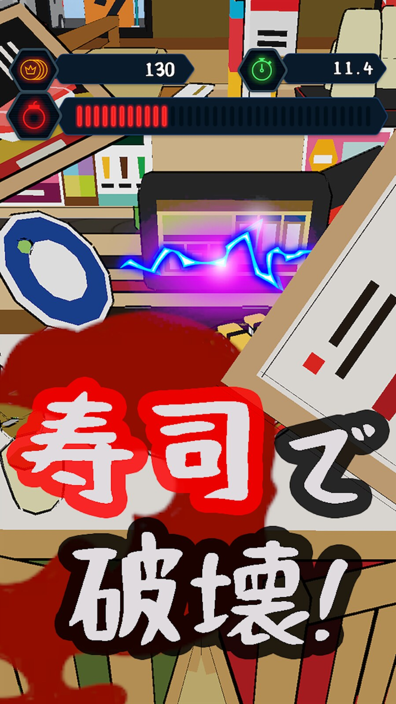
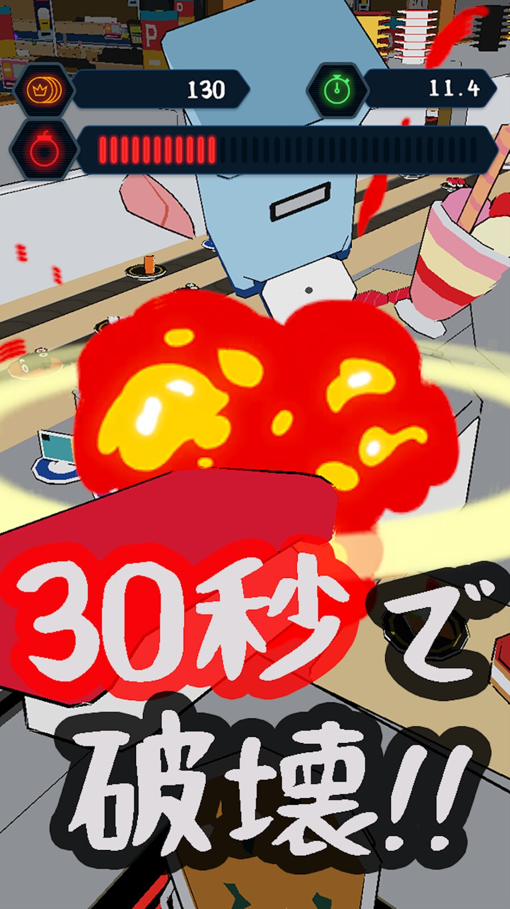
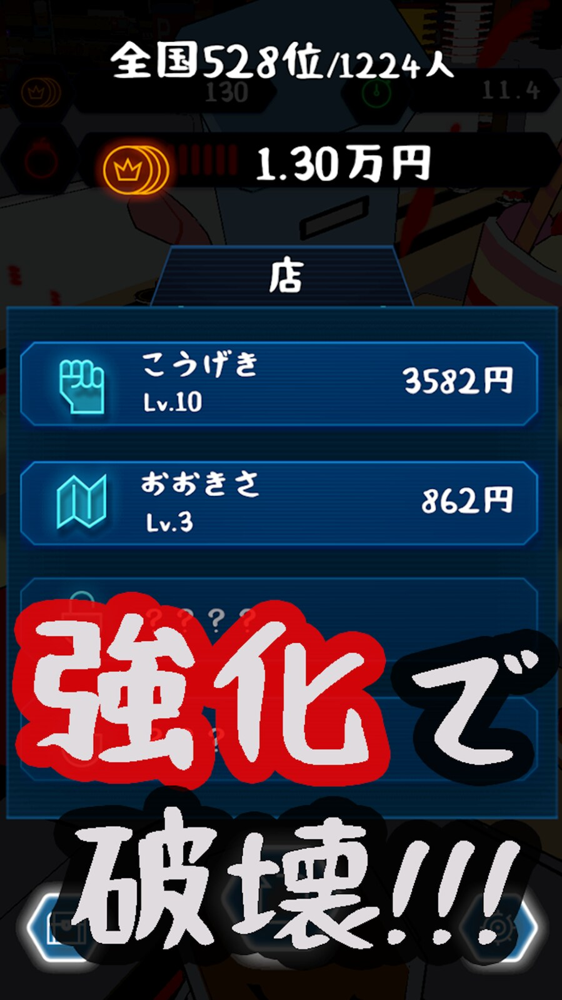

タップで寿司を飛ばす
画面をタップすると、選んだ寿司が狙った場所へ飛んでいきます。建物や店内の設備を狙い、30秒の間に破壊額を伸ばしていきます。
すしばく!は、画面をタップして寿司を飛ばし、建物を壊す30秒のアクションゲームです。マグロやサーモンなど36種類の寿司を集め、強化しながら全9ステージを進めます。タイムアタックや全国ランキングも遊べます。


動くターゲットをタップして寿司を飛ばし、30秒間のヒット数を競うブラウザミニゲームです。下の開始ボタンから遊べます。
アプリ本編では36種類の寿司を集め、強化しながら全9ステージの建物を壊します。アプリをダウンロードすると、寿司集めや全国ランキングも楽しめます。
画面をタップすると、選んだ寿司が狙った場所へ飛んでいきます。建物や店内の設備を狙い、30秒の間に破壊額を伸ばしていきます。
マグロ・サーモン・エビ・いくらなど、全部で36種類の寿司が登場します。寿司を解放すると、その中から使いたいネタを選んで遊べます。
攻撃力・大きさ・連射・寿司の解放という4つの項目を強化できます。全9ステージの攻略に加え、タイムアタックや全国ランキングで記録を競うこともできます。
寿司を飛ばすプレイ画面と、寿司を強化する画面を紹介します。スマホでは画像を左右にスワイプして見られます。


 ▶ PLAY MOVIE
▶ PLAY MOVIE
寿司が飛んで建物を壊す様子や、壊れた物が周りを巻き込む動きを動画で確認できます。
iPhoneとAndroidで遊べます。アプリのダウンロードと基本プレイは無料です。
このページでは、動くターゲットへ寿司を飛ばす30秒の簡易チャレンジを遊べます。本編は36種類の寿司、全9ステージ、4つの強化軸、タイムアタック、全国ランキングを備えた破壊ゲームです。Web版のスコアとは連動しません。
はい。寿司を飛ばして建物を壊す爽快感と、36種類の寿司を集めて強化する楽しみを組み合わせています。家具・家電の破壊が気になる方には、いえばく!もあります。
画面をタップして寿司を発射するシンプルな操作です。片手ですぐに遊べます。
マグロやサーモン、エビ、いくらなど、全部で36種類が登場します。
全9ステージに加え、タイムアタックモードと全国ランキングを楽しめます。
基本プレイは無料です。App StoreまたはGoogle Playからダウンロードできます。